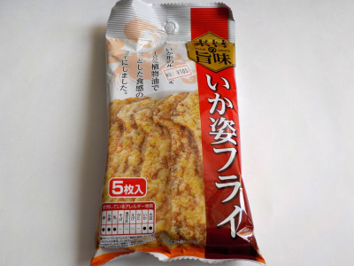

共同食品工業のいか姿フライ。
2022/11/02

平べったくて少し硬い食感のイカ姿フライでした。
最初食べた時は甘いんですが、食べてるうちに辛みや塩味が出てきました。
飲み物が欲しくなる味です。おつまみにもってこいですね。
イカの姿フライって5枚パックで販売してるものが多いと思うんですが、貧乏人なので一度に5枚食べるのは贅沢だって思ってしまいます。個包装で10枚とか20枚入りの商品があるといいのにって思いました。（シップタイプは近くに袋を置いて食べるので、次々食べてしまうのでダメです。）